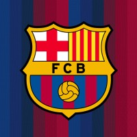

Bienvenidos al FC Barcelona
El mejor club del mundo

Sobre el club
El FC Barcelona fue fundado en 1899 y tiene su sede en Barcelona, España. El club es conocido por sus colores azul y grana y por su estadio, el Spotify Camp Nou.
A lo largo de su historia, el Barcelona ha conseguido numerosos títulos nacionales e internacionales y ha contado con grandes futbolistas.
Conoce más sobre el Barça
Puedes visitar nuestra sección de noticias para conocer las novedades del equipo o nuestra galería para ver imágenes del FC Barcelona.